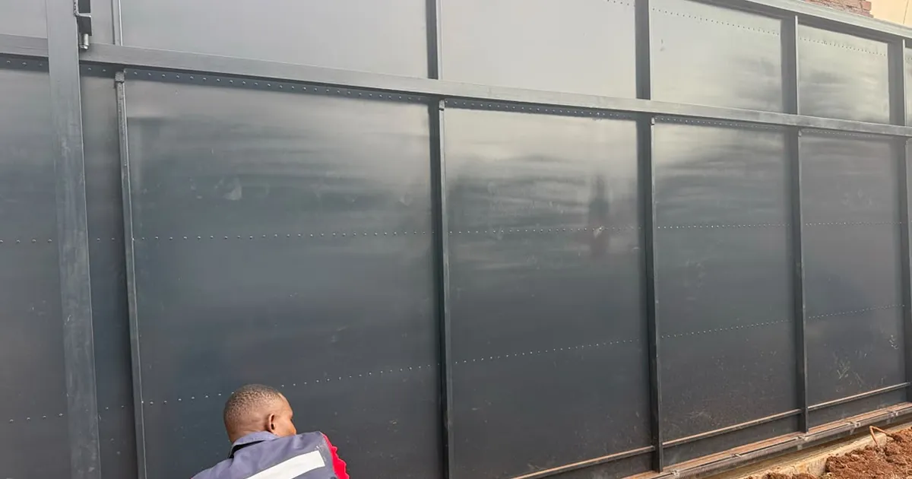
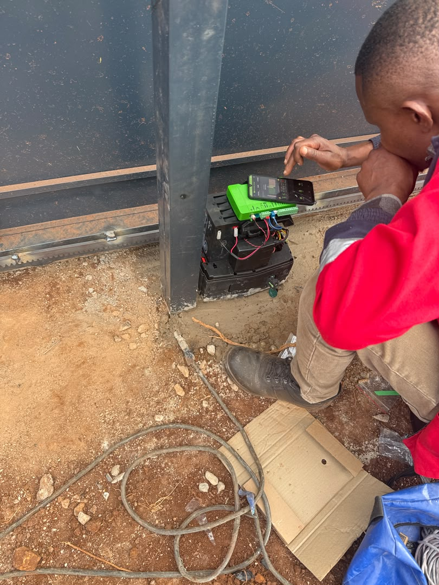

Quick answer
Test your security as a complete chain with the mains switched off: the gate motor battery, the manual release, every part of the CCTV system (cameras, recorder and router), the alarm and how it sends alerts, and the outside lights that matter most. Note what fails and how long backup lasts, then repeat the test every few months as batteries age.

Why one powered device is not enough
Security equipment works as a chain. A camera can be on while the recorder has stopped saving footage, or while the router that sends it to your phone is already off. Backup has to cover every link in the chain, so test it as one system.
What needs backup, and why
| Equipment | Usual backup | What to check |
|---|---|---|
| Gate motor | Built-in battery | How many open-close cycles it manages, warning signals |
| CCTV | Inverter, UPS or battery | Cameras, recorder and screen all stay on, footage keeps saving |
| Alarm | Panel battery | Stays armed, sirens and sensors work, alerts still go out |
| Router and internet | Often none | Remote viewing and app alerts still reach your phone |
| Outside lights | Solar or battery lights | Gates, parking and dark corners stay lit |
1. Test the gate motor battery
A gate battery wears out. Its capacity drops each year, so a system that coped with last year's outages may now manage far fewer cycles. Switch off the mains in a controlled way and run the gate. Check how smoothly it moves, whether warning signals appear, and whether the battery lasts long enough for a normal evening. Our gate motor guide explains the D5 and D10 options if yours needs replacing.
2. Make sure the gate can be opened by hand
Responsible adults in the house should know how to use the manual release. Keep release keys secure and never leave instructions where a stranger could use them. If the gate is too heavy or damaged to move by hand, fix that before relying on the motor in an outage.

3. Keep the whole CCTV chain powered
- Confirm the recorder keeps saving footage.
- Check the screen or app, not just the lights on the cameras.
- Make sure the date and time stay correct after the outage.
- Check you can play back what was recorded.
4. Check the alarm and how it alerts you
Alarm panel batteries also lose capacity. Confirm the alarm stays armed and that sirens and sensors work on backup. If alerts go by mobile network, internet or a monitoring company, test that route at the same time.
5. Light what matters most
Not every outside light needs backup. Prioritise the gate, parking, paths and the darkest weak points on the boundary. Solar or battery lights help, but placement still matters: a bright light pointing the wrong way leaves the entrance hard to see.
6. Do not forget the router
Remote viewing and app alerts depend on the router and internet connection. If the router has no backup, a camera may still be recording but you will not see it from your phone. List every device between the camera or alarm and the person who should get the alert, and you will see where the chain breaks first.
A simple power-cut security test
- Tell everyone at home that you are running a test.
- Switch off the mains safely, without turning off the security equipment itself.
- Open and close the gate.
- Check live CCTV and confirm footage is being saved.
- Arm the alarm and test how alerts are sent.
- Check the outside lights and remote access on your phone.
- Write down what failed, how long backup lasted and what needs servicing.
Repeat the test every few months and after any new equipment is installed. For how backup fits with the fence, gate and lighting, see layered home security.
Get a quote from Azzar
Send us your location, what you need and a few photos. We reply with a recommendation and a no-obligation quote, and arrange a free site assessment if one is needed.